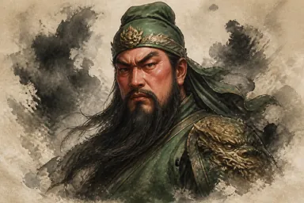
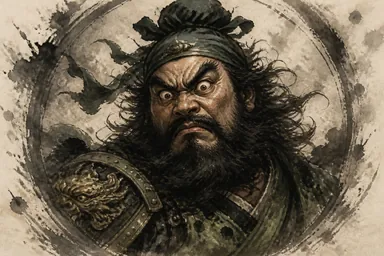
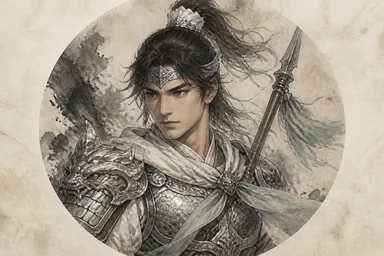
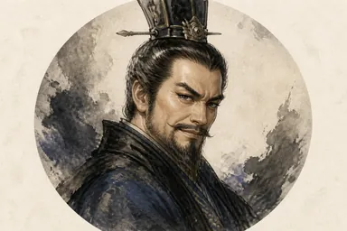
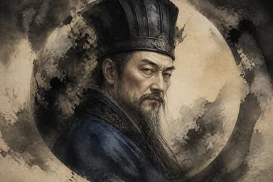
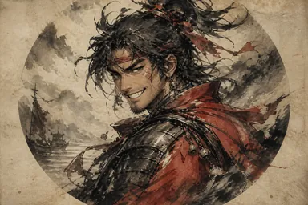
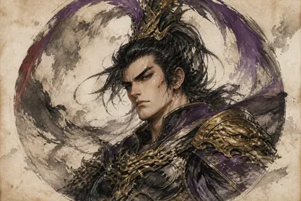

揭棋
- 将帅明置原位；其余十五子按己方原位随机暗放。
- 暗子第一步按所在原位（coverType）走，走完翻开。
- 被吃暗子由吃子方扣着，被吃方不能看。
- 明仕、明相可过河；暗仕仍不能出九宫。
规则与技能以当前线上版本为准
用语：「棋子」= 暗棋 + 明棋；不要用「棋子」表达只限明棋。
每个技能恰好一个类型；阶段可有可无。纯事件被动技没有阶段标签。
只给技能判定用，棋子上不显示。暗子对外按座位 coverType，翻开后按真身。

武圣
主动技。走棋阶段，你可以消耗8点战气，指定己方一枚暗棋与对方一枚暗棋。若两者为同一种棋子，则摧毁对方该子；否则两者同时被摧毁。
限定技。走棋阶段，指定己方一枚位于己方河界内的非将帅明棋。该子如处于己方河界内，则无法被吃。
卧龙
主动技。游戏开始时，你可以选择五枚暗棋，观看其真实身份。该子仍为暗棋，且仅对你可见。
主动技。回合结束时，你可以消耗5点战气，指定己方一枚棋子。直至你的下个回合开始，该子无法被吃。

咆哮
主动技。走棋阶段，你可以消耗8点战气，指定己方一枚暗棋。该子走棋次数+1。
被动技。每当你吃一子，你的战气+1。

龙胆
主动技。走棋阶段，你可以消耗1点走棋次数和6点战气，交换己方两枚非将帅棋的位置。
锁定技。回合开始时，若你被将军，战气+2。

枭雄
主动技。走棋阶段，若己方九宫内有敌方棋子，你可以消耗9点战气，将其全部收为己用。
被动技。当你吃掉一枚暗棋，且其真实身份为车、炮或马时，战气+3。

冢虎
主动技。走棋阶段，你可以消耗6点战气，指定对方一枚可以走动的非将帅棋。对方下回合只能行走该子。
主动技。游戏开始时，你可以标记对方一枚暗棋并观看其真实身份。该子成为明棋或被吃后，你的下个回合开始时再次标记。

刚烈
主动技。每当对方以非将帅棋吃掉己方棋子时，消耗8点战气，抛一枚六面骰。奇数则该子与被吃子同归于尽；偶数则恢复2点战气。对方第一次吃掉己方棋子时，揭示此武将。
主动技。走棋阶段，你可以消耗5点战气，指定对方一枚棋子。该子于其下个回合不能吃子。
神医
主动技。走棋阶段，你可以消耗9点战气，随机将己方一枚非将帅棋移至己方半场的随机空位（须可落子：暗士须留在九宫，暗棋象不得过河）。
被动技。每当你的棋子被吃，战气+1。
美周郎
主动技。走棋阶段，你可以消耗8点战气，标记对方一枚棋子。若其下回合行走该子，则改为随机落点。
被动技。己方以明炮棋吃子时，战气+2。
枭姬
主动技。走棋阶段，你可以消耗8点战气，指定己方一枚非将帅明棋，将其移至对方半场的随机空位。
被动技。己方一枚已过河的棋子被吃时，战气+2。

锦帆贼
主动技。走棋阶段，你可以消耗8点战气发动奇袭：两回合内，对方棋子不能过河，己方不受此限。已过河的对方棋子仍可在对岸活动。
被动技。每当对方棋子过河时，己方战气+1。

战神
主动技。走棋阶段，你可以消耗9点战气，指定己方一枚明棋兵卒棋，令其在所在位置变为马。
限定技。走棋阶段，你可以发动无双：在你之后的3个敌方回合内，己方将帅棋无法被吃，且无法被将军。
闭月
主动技。走棋阶段，你可以消耗8点战气，指定对方一枚暗棋。若其下回合行走其他棋子，则随机失去一枚非将帅棋。
锁定技。回合结束时，若本回合至少吃过一子，战气+1。